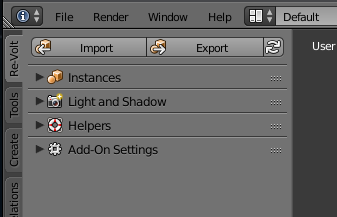
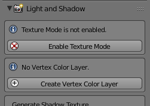
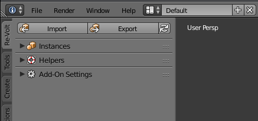
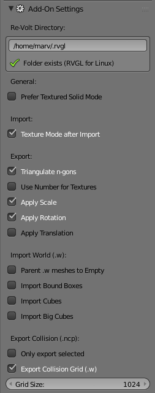
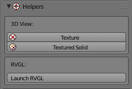
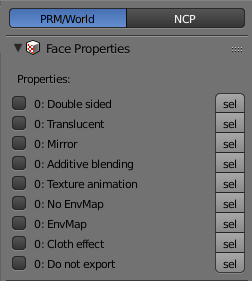
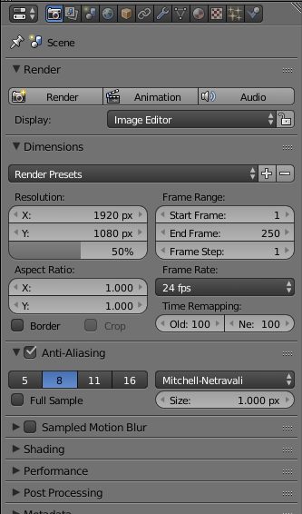

RV Add-On Documentation
Download

This is the documentation for Marv's Add-On for Re-Volt files.
It is intended to be used with Blender 2.79b or newer.
Tutorial
Resources (Animations, textures, etc.)
Known Issues
Please report Bugs and suggest features on GitHub.
Features
Import, Export
- World (.w)
- Mesh (.prm)
- Collision (.ncp)
- Instances (.fin)
- Mirror Planes (.rim)
- Texture animations (.ta.csv)
Missing Formats (help appreciated!)
- Hull (.hul; only partial import)
- Objects (.fob)
- Car Parameters (parameters.txt; parser is complete, only partial import: car body, wheels)
- AI Nodes (.fan)
- Position Nodes (.pos)
- Track Zones (.taz)
- Visiboxes (.viz)
- Level Information (.inf)
- Level properties (properties.txt)
Tools
- Re-Volt tool panel
- Bake light to vertex color
- Simple vertex painting tool
- Car shadow generator
- Texture animation helper
Installation
To install the add-on, locate the addons folder within your Blender folder.
In most cases, it is located at C:\Program Files\Blender Foundation\Blender\2.79\scripts\addons.
If you're on GNU/Linux, your add-on folder should be located at ~/.config/blender/2.79/scripts/addons/, where 2.79 is the Blender version you are using.
Extract the io_revolt folder into the addons folder.

Now start up Blender and open the user preferences (File -> User Preferences...). Click on the Add-ons tab and enter Re-Volt.

Tip: Now, click on Save User Settings at the bottom of the User Preferences window to keep the add-on enabled when you restart Blender.
Tools Panel

The panel located on the left hand side of the 3D view.
Open/Close the tools panel using T.
The following panels are located in the Re-Volt section. Its contents depend on the edit mode and whether an object is selected.
Some panels are collapsed by default. They can be expanded by clicking on the triangle on the left side of their header.
Panels can also be rearranged by dragging them using the handles at the right hand side.
Tip: Resize the tools panel to a comfortable size so the contents can be read more easily.
You can hover your mouse over any of the buttons to get a tooltip with an explanation.
Widgets

Sometimes helper widgets pop up to make your life easier. They may prompt you about missing vertex color layers or a different view mode.
Note: Some panels are disabled until you click on a widget (e.g. missing vertex color layer).
Import / Export
The Import / Export panel is fixed to the top of the Re-Volt section of the tool panel. It can only be seen in Object mode.

There are two main buttons, one for import and one for export.
They have the same effect as the menu entries in the File -> Import/Export menus.
A repeat button can be found next to the Export button which repeats the last export.
Add-On Settings

Some of these settings can also be found when importing/exporting files in the bottom left.
General Settings
Prefer Textured Solid Mode:
There are two encouraged ways to view textured meshes: Texture mode and Solid mode with Textured Solid shading enabled.
If this setting is enabled, the add-on will switch to Textured Solid mode instead of Texture mode.
In Textured Solid mode, objects have additional shading which makes white and untextured models a lot easier to work with.
Import Settings
Texture Mode after Import:
Switches to texture display mode when a mesh has been imported (applies to .prm
and .w).
Export Settings
Triangulate n-gons:
Triangulates faces with more than 4 vertices (also called n-gons).
This will only affect the exported object, the mesh itself will not be
triangulated.
Deselecting this might result in broken exports.
Use Number for Textures:
Instead of using the texture file to determine the texture number, the number
set in the face properties panel will be used for exporting.
Apply Scale:
Applies the scale of the object when exporting.
Apply Rotation:
Applies the rotation of the object when exporting.
Apply Translation:
Applies the position of the object when exporting.
Import World (.w)
Parent .w meshes to Empty:
Creates an empty object with the imported file's name and parents all meshes
contained in the .w file to it. This makes the object outliner a lot less
cluttered.
Import Bound Boxes:
Imports the bound box for every single mesh of the .w file.
Import Cubes:
Imports the cubes for every single mesh of the .w file.
Import Big Cubes:
Imports the big cubes surrounding multiple meshes of the .w file.
* Import Layers:
This option will be given as soon as one of the above debug settings have been
enabled (boundary boxes, spheres and big cubes):
Selector for the layer(s) the debug objects will be placed on. Multiple layers
can be selected by Shift-clicking or dragging.
By default, all objects will be imported to the first layer.
When imported, the actual meshes are going to be on the first layer while the
debug objects potentially are on other layers.
To view multiple layers at once, hold down Shift and press numbers, e.g.
1 and then 2. While doing that, make sure the mouse cursor hovers over the 3D view.
Export Collision (.ncp)
Only export selected:
When this setting is enabled, only selected objects will be exported to the NCP.
If only one object is selected, the location of the object will be ignored and the center
of the NCP will be the center of the selected object (useful for exporting NCPs for single PRM files).
Export Collision Grid (.w):
This setting is required when exporting a collision file that matches a .w file (e.g. nhood1.ncp for nhood1.w).
NCP files can be exported without the collision grid if the .ncp is intended to be used with an object or instance (.prm).
Grid Size:
Defines the size of the lookup grid that is written to the end of the NCP file. The size defines the size of the single "cells". Choosing a higher number will result in a faster export but poorer performance in-game.
Instances

The Instances Panel provides some helper tools to make working with instances easier.
Select by data: Selects all objects with the same object data (mesh) as the currently selected object. You could, for example, place objects around the scene using ALT+D to create duplicates with shared mesh data and then select all of them.
Rename selected: Instances that have the same mesh should also have the same name. This renames all selected objects to the name entered in the text field above.
Select by name: Selects all objects that contain the name entered in the text field above.
Mark as Instance: Sets the is instance property for all selected objects. These objects will then be exported when exporting to .fin.
Remove Instance property: Removes the is instance property for all selected objects so they won't be exported when exporting to .fin.
Light and Shadow

Shade Object
Shades a mesh by baking light to the vertex color layer.
Orientation:
Sets the orientation of the lights. The following options are available:
- Z (Vertical): Places lights above and beneath the selected object.
- Y (Horizontal): Places lights in the front and the back of the selected object
- X (Horizontal): Places lights on the left and right of the selected object.
Direction:
Shows where the lights will be placed, depending on the chosen orientation.
Light:
Three options: Hard (sun, more contrast), Soft (hemisphere, smoother) and None.
- The hard option emits light in a distinct direction (Blender docs).
- The soft option emits light from a hemisphere which makes the model evenly lit (Blender docs).
Intensity:
This defines the intensity of the light sources. This is the same setting as the lamp's energy.
Generate Shadow Texture
With this feature you can create shadows that are ready for use in-game. The shadows are negative which is a requirement by the game.
The add-on creates the shadows with ray-tracing and then baking them to an automatically sized textured plane (takes child objects into account).
To save the shadows, go into the UV/Image Editor, select the shadow (most recenty try has the highest number, e.g. Shadow.420) and then click Image -> Save as Image.
Warning: Start with low-quality settings first as Blender might hang a while during the creation of a shadow. If it appears to freeze, wait a few minutes. Depending on the settings you chose, it might take a while.
Method:
There are two options:
- Default (Adaptive QMC), which is the faster option. I recommend this for testing the shadow settings.
- High Quality (Constant QMC), which is the slower and less-grainy option. I recommend using this when you're done tweaking your shadow settings.
Quality:
The amount of samples the shadow is rendered with (number of samples taken extra).
Softness:
Light size for ray shadow sampling.
Resolution:
The resolution of the resulting texture (height and width).
Table:
Shadow coordinates for use in parameters.txt of cars. Click to select all, then CTRL C to copy.
Batch Bake Lights
This feature allows you to bake lights in the current scene to instance objects.
Bake to Model RGB:
Whether to bake the color to the Model RGB value. This can be used to darken or tint the instance.
Bake to Model Env:
Whether to bake the color to the Model Env value. This can be used to alter the reflection color of the instance.
Bake all selected
Bakes a full render to all selected objects. This usually takes a long time, Blender freezes until the action is done. A popup will show up when the baking process is complete.
Helpers

3D View
Texture:
Enables texture mode.
Textured Solid:
Enables solid shading mode and enables the textured solid option. This might be better for working with only half-textured models.
RVGL
Launch RVGL: Starts RVGL in developer mode. The path has to be configured in the add-on settings.
Face Properties
The list of properties is put together as follows:
Checkbox:
Enable or disable the property for all selected faces. The checkbox is checked when all selected faces have this property.
Number:
Indicates how many of the selected faces have this property.
Property Name:
Hover the property name to find out more about the property.
Select (sel) button:
Click to select/deselect all faces with this property.
Texture:
Sets the texture number for all selected faces. -1 if numbers of selected faces don't match.
PRM/World

NCP

Material:
Set: Displays the material of the currently selected face. Select a material from the list to apply it to all selected faces. The select (sel) button selects all faces with the same material.
Select: Select a material from the list to select all faces with the same material.
Vertex Colors

Vertex colors will be set depending on the selection mode.
Vertex, edge and face select modes (CTRL+TAB) each have different effects.
Vertex Color Layers:
Select the currently active vertex color layer. Add and remove layers with the + and - buttons.
Color Wheel:
An easy to access color selector to select the color hue and shade.
The Set Color button sets the color to the selected vertices/edges/faces.
The Get Color button gets the color from the selected vertices/edges/faces.
Click on the color preview button to get a more detailed color wheel that supports RBG, HSV and Hex values and a color picker.
Shade buttons:
These buttons can be used for easily shading a mesh. They range from black to white.
Texture Animation

An edit panel for texture animations. The animations themselves are saved in the scene, not the selected object. It is only accessible in edit mode to provide tools to use existing polygons and UV mapping to create an animation.
Total Slots:
The total amount of texture animations you would like to use.
For example, set this to 3 to use slots 0, 1 and 2.
The maximum amount is 10 since a polygon's animation is determined by the texture number.
Animation Slots
Slot:
The animation slot to display in the panel. The actual animation is set by the
texture number/page.
Frames:
The amount of frames you want to use for the animation. For example, set this to
32 in order to access frames 0 to 31.
Animation Frame:
Frame:
The frame to display in the panel.
Preview:
Click the Preview button to preview the frame's UV on the currently selected face. The buttons next to it go back or advance one frame and then preview the UV of that frame on the currently selected face.
Texture:
The texture page number this animation frame uses.
Duration:
The duration of the frame or the delay until the next frame shows up.
Animate
Functions for automatically generating animations.
Transform Animation

Interpolates the UV coordinates between two given frames. (Animates from point A to B.)
Start Frame:
The start frame the animation starts from. This frame will not be changed.
End Frame:
The frame the animation ends on. This frame will not be changed. To achieve a perfectly looping animation, it's sometimes necessary to leave the last frame out. To do so, decrease the amount of frames of the animation by 1.
Frame Duration:
The duration of all resulting frames.
Texture:
The texture page applied to all resulting frames.
Grid Animation

Lays out animation frames on a grid, much like the mars animation in Museum 2.
Start Frame:
The frame the animation starts at.
X Resolution:
The width of the grid.
Y Resolution:
The height of the grid.
Frame Duration:
The duration of all resulting frames.
Texture:
The texture page applied to all resulting frames.
UV
UV to Frame:
Takes the UV coordinates of the currently selected face and applies them to the texture animation frame.
Coordinates:
The UV mapping for the currently displayed frame. For triangular faces, UV3 will
be ignored.
Properties Editor

The properties Editor is usually found at the right hand side of the user interface.
Most Re-Volt properties can be found in the Object tab (orange cube icon).
Some properties from Blender are used as well, such as vertex colors. Vertex color layers can be found in the object data section (symbol with three dots).
Object

The Re-Volt Panel of the Object section is pinned to the top.
NCP Properties
Ignore Collision: If enabled, the object won't be exported to .ncp.
Instance Properties

Is Instance: If enabled, the object will be exported to .fin. If a .prm file with the name of the object doesn't yet exist, it will also be exported to .prm.
Model Color: Additional or subtractive RGB color. Default is (0.5, 0.5, 0.5). Setting this to 1.0 erases the existing vertex color, 0.5 leaves it where it is and anything closer to 0 darkens the instance.
EnvColor: Environment map color and intensity (alpha).
Hide: Hides the instances (only collision).
Don't show in Mirror Mode: The instance won't be shown if the level is played in mirror mode.
Is affected by Light: In-game lights affect the instance.
No Camera Collision: The camera will clip through the instance.
No Object Collision: The instance won't collide with cars and other moving objects.
Priority: If set to anything other than 0, the instance cannot be turned off using the video options.
LoD Bias: Unused
Mirror Properties
Is Mirror Plane: If enabled, the object will be exported to
Scene
Only some debug stuff, not much to be scene.
Changelog
2018-06-
Version rva_18.06
Topics: Bugfixes, Tools
- Fixes
- Crash when importing levels with texture animation
- Batch bake should not crash anymore
- Import and export of .fin properties (mainly colors)
- Additions
- .rim support (Mirror Planes)
- Vertex color layer list in the tools panel
- Batch Bake section in the Light and Shadow tool panel
- RVGL Launcher in the Helpers panel. The RVGL path (folder) has to be set in the add-on settings.
- Modifications
- Code restructuring
- UI restructuring
2018-06-19
Version rva_18.0619
Topics: Bugfixes
- Fixes
- Support loading files with uppercase letters
- Throw an error message when exceeding polygon/vertex limits for meshes
- Activate NCP no-collision flag (reported by Kiwi)
- Modifications
- Inverted alpha vertex color layer: Black is translucent, white is opaque. I've done this to resemble the behavior of pure black on textures.
2018-04-30
Version rva_18.0430
Topics: Instance (.fin), UI, Bugfixes
- Additions
- Instances (.fin): Export (full support)
- Select by name button in the Instances panel that allows users to select all objects with a similar name
- Mark as Instance button in the Instances panel that sets the instance properties on all selected objects
- Batch baking feature for instance RGB in the Instances panel
- Initial hull support: Import (unfinished)
- Fixes
- Textures are now loaded when importing a mesh from the custom folder (reported by Gotolei)
- Ensure that NCP layers exist when exporting: All Material layers and Type layers are now kept. This fixes missing materials when exporting NCP. (reported by LoScassatore, Gorgonzola)
- Export of textures with suffixes like .bmp.001 (reported by Boy80)
- Modifications
- Moved the instances helper section to a dedicated Instances panel.
- Objects marked as instance (Is Instance) will no longer be exported when exporting to .w, use .fin instead
- Fixed all Re-Volt panels to the top (object and scene properties) so they're easier to find. This makes the add-on a lot more intrusive but most people using this add-on use Blender exclusively for Re-Volt.
- Message boxes for confirming actions in the helpers panel
- Texture number face property only shows when Use Number for Textures option is enabled
- Prefer Solid Textured Mode is now disabled by default
2018-02-25
Version rva_18.0225
- Additions
- NCP: Only export selected option added (check the documentation for details)
- Fixes
- Rewrote the parameters.txt parser, should now load all cars
- The light panel now only shows up if at least one object is selected
- Misc
- New system for handling import and export errors
2018-02-19
Version rva_18.0219
- Additions
- Instance (.fin) import
- Batch-rename feature (Helpers panel)
- No collision flag for NCP (face properties)
- Fixes
- Prepared the add-on for 2.79a. All features should now work as expected.
- Various Import/Export fixes
- Misc.
- Improved UI
- Documentation is now generated with Ivy
2017-11-12
Version rva_17.1112
- Fixes
- Fixed the following crash: Import mesh, clear .blend, import mesh again (reported by Zorbah)
- Shadowtable not added to the UI (reported by Mladen)
- Required vertex color layers weren't created on export (Issue #16, reported by progwolff)
- Additions
- NCP: Setting for collision grid size (requested by Zorbah). Higher values = faster export (might slow down the game in return)
2017-10-25
Version rva_17.1025
- Fixes (reported by Gotolei)
- Animation slot count can now be set to 10
- Frame count for animations reset itself
- Animation export didn't work in some cases
2017-10-24
Version rva_17.1024
- Additions
- Texture Animation: Transform animation feature (animates from frame A to frame B), Grid animation feature (for creating animations like the mars animation found in Museum 2). Added a resources link to the documentation which will include texture animation sheets ready to be used with the add-on.
- Re-Export Button: Press the button next to the Export button to export to the same file again.
- Fixes
- The vertex color picker now picks from selected faces or vertices. (Contribution by Boy80)
- Fixed persisting QUAD flag by removing it from the export mask. (Reported by Boy80)
- Importing cars with the same texture name resulted in them having the same texture. (Reported by Gotolei)
- UI
- Added icons to panels
- Moved add-on settings to a separate panel
- The settings, texture animation and the helpers panel are now collapsed by default
- Fixed the import/export panel to the top
- Notifications now have an icon
- Misc.
- Huge code refactoring and some fixes
- Restructured the documentation
2017-10-17
Version rva_17.1017
- Additions
- NCP (collision): Import and export is now supported. The face properties panel has a section for NCP now (face flags and materials).
- Settings: Prefer Textured Solid mode setting, enabled by default. This makes the add-on use textured solid mode (easier for editing NCP/untextured meshes).
- Import/Export: Import and export operators now show the matching settings in the bottom left.
- Vertex Colors: Button for getting the color from the active face (requested by Boy80)
- Fixes
- The y coordinates of bounding boxes were swapped.
- Faces can now be exported with no texture (reported by Boy80).
2017-10-10
Version rva_17.1010
- Added Re-Volt file structure specifications to the documentation
- Fixes
- Light Baking Tool: Reverse horizontal X direction (light was shining from the wrong direction)
- Export .w, export .prm: Apply scale and rotation correctly. Parented objects should now be exported correctly.
- Debug
- Rename bound spheres to cubes
- Import cubes instead of spheres
2017-10-09
Version rva_17.1009
- Export .w
- Export complete .w files with meshes, boundary boxes/spheres, env colors and texture animation
- Texture animation panel
- Added buttons for copying UV from and to selected faces.
- Settings panel completed
- Parent .w meshes to Empty now disabled by default to avoid confusion
- New layout
- Misc
- Decreased shadow table accuracy to 4 decimal places
2017-10-07
Version rva_17.1007
- Tool panels
- Fixed a bug where the tool panels became unusable after CTRL Z.
- Import .w
- Bound boxes, bound spheres and big cubes, each of which can be imported on different layers
- Env colors with GUI implementation
- Import .prm completed
- Apply scale and rotation on export by default (no need for manual apply, can be disabled in the options)